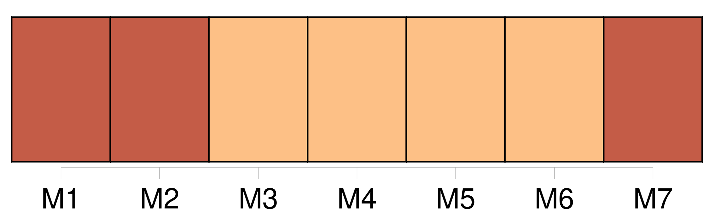

Longueur nb maillons : 19 mentions |
 |
[Mes frères] et mes sœurs commençaient d'en vouloir à la guerre, ils la trouvaient longue. [7 phrases] [Mes frères] plaisantent ma petite sœur. Les roues de sa bicyclette ont à peine quarante centimètres de diamètre : « [On] te laissera seule sur la route. [3 phrases] [Ils] proposent de réparer la mienne. [Ils] se lèvent dès l'aube pour connaître les nouvelles. [3 phrases] [Ils] eussent brûlé Paris pour partir plus vite.
Ce qui terrifiait l'Europe était devenu [leur] unique espoir. [5 phrases]
Voici comment : [6 phrases]
En revenant de l'école, et en y allant, [mes frères] tiraient sa sonnette, avec d'autant plus d'audace que le chien, qui pouvait avoir mon âge, n'était pas à craindre. La veille du 14 juillet 1914, en allant à la rencontre de [mes frères] , quelle ne fut pas ma surprise de voir un attroupement devant la grille des Maréchaud. [45 phrases] Certes, j'éprouvais cet étrange besoin plus vivement que [mes frères] [62 phrases] La belle saison venue, mon père aimait à nous emmener, [mes frères] et moi, dans de longues promenades. [31 phrases]
[Mes frères] , [eux] , bâillaient avec ce nouveau petit camarade chétif, à qui l'on défendait de courir. [70 phrases] Mon père et [mes frères] s'étaient ennuyés, qu'importe!! [148 phrases]
Un de [mes frères] , assez excité par l'orage, me dit de me rendre dans la chambre où mon père s'était étendu. [225 phrases] Tandis que ma mère emplissait le panier qui me gâtait d'avance ma première nuit d'amour, je voyais les yeux pleins de convoitise de [mes frères]
Je pensai bien à le [leur] offrir en cachette, mais une fois tout mangé, au risque de se faire fouetter, et pour le plaisir de me perdre, [ils] eussent tout raconté. |

|
Il est possible de télécharger la ressource sur la page Ortolang |
Si vous avez des questions ou vous voyez des erreurs, merci d'envoyer un mail à silvia.federzoni89@gmail.com |